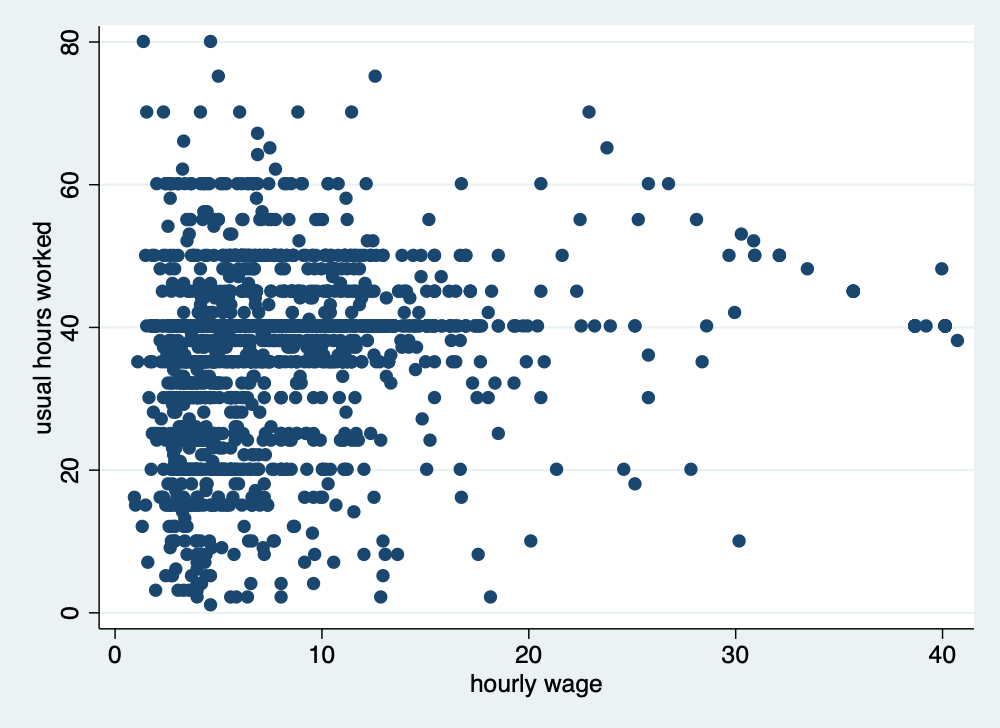

Chapter 4 Cleaning and Checking Data
Mitchell Chapter 4
Good note from Mitchell at the beginning: Garbage In; Garbage Out.
Before doing analysis, you really need to check your data to look for data quality issues.
4.1 Checking individual variables
We start off with looking from problems in individual variables. Mitchell uses Working Women’s Survey (WWS) dataset, but we’ll use Current Population Survey (CPS) data, as well.
The describe command is a useful command to see an overview of your data with variables labels, storage type, and value lables (if any)
Contains data from smalljul25pub.dta
obs: 122,252
vars: 50 12 Aug 2025 19:17
size: 8,313,136
------------------------------------------------------------------------------------------------------------------
storage display value
variable name type format label variable label
------------------------------------------------------------------------------------------------------------------
hrhhid2 int %8.0g
hrmis byte %8.0g HRMIS
hrmonth byte %8.0g HRMONTH
hryear4 int %8.0g HRYEAR4
gestfips byte %8.0g
gediv byte %8.0g
pulineno byte %8.0g PULINENO
pudis byte %8.0g PUDIS
puiodp1 byte %8.0g PUIODP1
puiodp2 byte %8.0g PUIODP2
puiodp3 byte %8.0g PUIODP3
perrp byte %8.0g
pesex byte %8.0g
pemaritl byte %8.0g
pehspnon byte %8.0g
peeduca byte %8.0g
peafever byte %8.0g
ptdtrace byte %8.0g
prpertyp byte %8.0g
prtage byte %8.0g
pehractt int %8.0g
pehract1 byte %8.0g
pehract2 byte %8.0g
pemlr byte %8.0g
peio1icd int %8.0g
peio1cow byte %8.0g
peio2cow byte %8.0g
prmjind1 byte %8.0g
prmjind2 byte %8.0g
prmjocc1 byte %8.0g
prmjocc2 byte %8.0g
prdtind1 byte %8.0g
prdtind2 byte %8.0g
prdtocc1 byte %8.0g
prdtocc2 byte %8.0g
prsjmj byte %8.0g
peernhry byte %8.0g
peernhro byte %8.0g
peernlab byte %8.0g
prerelg byte %8.0g
prdisflg byte %8.0g
pecert1 byte %8.0g
pecert2 byte %8.0g
pecert3 byte %8.0g
pwcmpwgt long %12.0g
pternwa long %12.0g
ptio1ocd int %8.0g
hrhhid double %10.0g
ptwk byte %8.0g
gtmetsta byte %8.0g
------------------------------------------------------------------------------------------------------------------
Sorted by: You will noticed that we lack value labels and variable labels. Luckily we have a data dictionary on Census’s website. Let’s label the variables and use the describe command again.
label variable gestfips "State"
label variable gediv "Census Region"
label variable pternwa "Weekly earnings"
label variable peio1cow "Class of worker in Main Job"
label variable peio1cow "Class of worker in Second Job"
label variable pemlr "Labor Force Status"
describeContains data from smalljul25pub.dta
obs: 122,252
vars: 50 12 Aug 2025 19:17
size: 8,313,136
------------------------------------------------------------------------------------------------------------------
storage display value
variable name type format label variable label
------------------------------------------------------------------------------------------------------------------
hrhhid2 int %8.0g
hrmis byte %8.0g HRMIS
hrmonth byte %8.0g HRMONTH
hryear4 int %8.0g HRYEAR4
gestfips byte %8.0g State
gediv byte %8.0g Census Region
pulineno byte %8.0g PULINENO
pudis byte %8.0g PUDIS
puiodp1 byte %8.0g PUIODP1
puiodp2 byte %8.0g PUIODP2
puiodp3 byte %8.0g PUIODP3
perrp byte %8.0g
pesex byte %8.0g
pemaritl byte %8.0g
pehspnon byte %8.0g
peeduca byte %8.0g
peafever byte %8.0g
ptdtrace byte %8.0g
prpertyp byte %8.0g
prtage byte %8.0g
pehractt int %8.0g
pehract1 byte %8.0g
pehract2 byte %8.0g
pemlr byte %8.0g Labor Force Status
peio1icd int %8.0g
peio1cow byte %8.0g Class of worker in Second Job
peio2cow byte %8.0g
prmjind1 byte %8.0g
prmjind2 byte %8.0g
prmjocc1 byte %8.0g
prmjocc2 byte %8.0g
prdtind1 byte %8.0g
prdtind2 byte %8.0g
prdtocc1 byte %8.0g
prdtocc2 byte %8.0g
prsjmj byte %8.0g
peernhry byte %8.0g
peernhro byte %8.0g
peernlab byte %8.0g
prerelg byte %8.0g
prdisflg byte %8.0g
pecert1 byte %8.0g
pecert2 byte %8.0g
pecert3 byte %8.0g
pwcmpwgt long %12.0g
pternwa long %12.0g Weekly earnings
ptio1ocd int %8.0g
hrhhid double %10.0g
ptwk byte %8.0g
gtmetsta byte %8.0g
------------------------------------------------------------------------------------------------------------------
Sorted by: 4.2 One way tabulation
The tabulation or tab command is very useful to inspect categorical variables.
The tabulation or tab command is very useful to inspect categorical variables. Let’s look at collgrad, which is a binary for college graduate status in wws data, and let’s look at race data, which is a categorical variable. Let’s include the missing option to make sure no observations are missing data
quietly cd "/Users/Sam/Desktop/Econ 645/Data/Mitchell"
use wws, clear
tabulate collgrad, missing
tabulate race, missing(Working Women Survey)
college |
graduate | Freq. Percent Cum.
------------+-----------------------------------
0 | 1,713 76.27 76.27
1 | 533 23.73 100.00
------------+-----------------------------------
Total | 2,246 100.00
race | Freq. Percent Cum.
------------+-----------------------------------
1 | 1,636 72.84 72.84
2 | 583 25.96 98.80
3 | 26 1.16 99.96
4 | 1 0.04 100.00
------------+-----------------------------------
Total | 2,246 100.00Race should only be coded between 1 and 3, so we have one miscoded observation. Let’s find the observation’s idcode
(Working Women Survey)
+---------------+
| idcode race |
|---------------|
2013. | 543 4 |
+---------------+4.3 Summarize
The summarize or sum command is very useful to inspect continuous variables. Let’s look at the amount of unemployment insurance in unempins. The values range between 0 and 300 dollars for unemployed insurance received last week.
(Working Women Survey)
Variable | Obs Mean Std. Dev. Min Max
-------------+---------------------------------------------------------
unempins | 2,246 30.50401 73.16682 0 299Let’s look at weekly earnings in CPS.
quietly cd "/Users/Sam/Desktop/Data/CPS/"
use smalljul25pub.dta, replace
gen earnings=pternwa/100
summarize earnings if prerelg==1(28,617 missing values generated)
Variable | Obs Mean Std. Dev. Min Max
-------------+---------------------------------------------------------
earnings | 9,635 1408.951 1251.25 0 6930.64The data range between $0 and $6,930.64 in weekly earnings last week with a mean of 1,408.95 dollars and a standard deviation of 1,251,25 dollars. The max seems a bit high. Let’s add the detail option to get more information.
earnings
-------------------------------------------------------------
Percentiles Smallest
1% 88 0
5% 250 0
10% 384 0 Obs 9,635
25% 680 0 Sum of Wgt. 9,635
50% 1060 Mean 1408.951
Largest Std. Dev. 1251.25
75% 1730 6930.64
90% 2700 6930.64 Variance 1565626
95% 3460 6930.64 Skewness 2.688217
99% 6930.64 6930.64 Kurtosis 11.9109We can see that the mean is $1,408.95, while the median is $1,060.00. The mean appears to be skewed rightward, where the skewness is 2.7 and the kurtosis is 11.9. The 95th percentile is 3,460.00 while the 99th percentile is $6,930.64.
Let’s look at wage data in the wws data set
(Working Women Survey)
hourly wage
-------------------------------------------------------------
Percentiles Smallest
1% 1.892108 0
5% 2.801002 1.004952
10% 3.220612 1.032247 Obs 2,246
25% 4.259257 1.151368 Sum of Wgt. 2,246
50% 6.276297 Mean 288.2885
Largest Std. Dev. 9595.692
75% 9.661837 40.19808
90% 12.77777 40.74659 Variance 9.21e+07
95% 16.73912 250000 Skewness 35.45839
99% 38.70926 380000 Kurtosis 1297.042For our wws data, our mean of 288.29 dollars/hour appears to be highly skewed rightward and heavily influenced by outliers. Our median hourly wage is 6.7 dollars per hour and our 99th percentile hourly wage is 38.7 dollars per hour, but our mean is 288.29 dollar/hour. Our skewness is 35, which means our wage data are highly skewed. Our Kurtosis shows that the max outliers are heavily skewing the results. A normal distributed variable should have a kurtosis of 3, and our kurtosis is 1297. When we see the 2 largets observations, they are 250,000 and 380,000 dollars/hour.
This means we have found potential data measurement issues. Let’s look at the outliers
quietly cd "/Users/Sam/Desktop/Econ 645/Data/Mitchell"
quietly use wws, clear
list idcode wage if wage > 1000 | idcode wage |
|-----------------|
893. | 3145 380000 |
1241. | 2341 250000 |
+-----------------+Let’s look at ages, which should range frm 21 to 50 years old. We can use both the summarize and tabulate commands. Tabulate can be very useful with continuous variables if the range is not too large.
quietly cd "/Users/Sam/Desktop/Econ 645/Data/Mitchell"
quietly use wws, clear
summarize age
tabulate age Variable | Obs Mean Std. Dev. Min Max
-------------+---------------------------------------------------------
age | 2,246 36.25111 5.437983 21 83
age in |
current |
year | Freq. Percent Cum.
------------+-----------------------------------
21 | 2 0.09 0.09
22 | 8 0.36 0.45
23 | 16 0.71 1.16
24 | 35 1.56 2.72
25 | 44 1.96 4.67
26 | 50 2.23 6.90
27 | 50 2.23 9.13
28 | 63 2.80 11.93
29 | 49 2.18 14.11
30 | 55 2.45 16.56
31 | 57 2.54 19.10
32 | 60 2.67 21.77
33 | 56 2.49 24.27
34 | 95 4.23 28.50
35 | 213 9.48 37.98
36 | 224 9.97 47.95
37 | 171 7.61 55.57
38 | 175 7.79 63.36
39 | 167 7.44 70.79
40 | 139 6.19 76.98
41 | 148 6.59 83.57
42 | 111 4.94 88.51
43 | 110 4.90 93.41
44 | 98 4.36 97.77
45 | 45 2.00 99.78
46 | 1 0.04 99.82
47 | 1 0.04 99.87
48 | 1 0.04 99.91
54 | 1 0.04 99.96
83 | 1 0.04 100.00
------------+-----------------------------------
Total | 2,246 100.00Let’s look at the outliers
quietly cd "/Users/Sam/Desktop/Econ 645/Data/Mitchell"
quietly use wws, clear
list idcode age if age > 50 | idcode age |
|--------------|
2205. | 80 54 |
2219. | 51 83 |
+--------------+We have again found potential data measurement problems. The data is supposed to range from 21 to 50, but there are two observations with 54 and 83. It is possible that they were incorrectly entered, and they are supposed to be 45 and 38, respectively.
4.4 Crosstabulation - categorical by categorical variables
The two-way tabulation through the tabulate command is a very useful way to look for data quality problems or to double check binaries created. Let’s look at variables metro, which is a binary for whether or not the observation lives in a metropolitian areas, and ccity, which is whether or not the observation lives in the center of the city.
quietly cd "/Users/Sam/Desktop/Econ 645/Data/Mitchell"
quietly use wws, clear
tabulate metro ccity, missingDoes woman |
live in | Does woman live in
metro | city center?
area? | 0 1 | Total
-----------+----------------------+----------
0 | 665 0 | 665
1 | 926 655 | 1,581
-----------+----------------------+----------
Total | 1,591 655 | 2,246 An alternative is to count the number of observations that shouldn’t be there. So we’ll count the number of observations not in a metro area but in a city center. I personally don’t use it, but it has it’s uses.
quietly cd "/Users/Sam/Desktop/Econ 645/Data/Mitchell"
quietly use wws, clear
count if metro==0 & ccity==1 0Let’s look at married and nevermarriaged. There should be no individuals that appear in both married and nevermarried.
quietly cd "/Users/Sam/Desktop/Econ 645/Data/Mitchell"
quietly use wws, clear
tabulate married nevermarried, missing | Woman never been
| married
married | 0 1 | Total
-----------+----------------------+----------
0 | 570 234 | 804
1 | 1,440 2 | 1,442
-----------+----------------------+----------
Total | 2,010 236 | 2,246 There may be observation that have been married, but not currently married. There should be no observations that are both married and never married.
quietly cd "/Users/Sam/Desktop/Econ 645/Data/Mitchell"
quietly use wws, clear
count if married == 1 & nevermarried == 1
list idcode married nevermarried if married == 1 & nevermarried == 1 2
+-----------------------------+
| idcode married neverm~d |
|-----------------------------|
1523. | 1758 1 1 |
2231. | 22 1 1 |
+-----------------------------+We have found another potential data measurement issue. There are 2 observations that are married and never married.
Let’s look at college graduates and years of school completed. We can use tabulate or the table commands. I personally prefer tabulate, since we can look for missing.
quietly cd "/Users/Sam/Desktop/Econ 645/Data/Mitchell"
quietly use wws, clear
tabulate yrschool collgrad, missing Years of |
school | college graduate
completed | 0 1 | Total
-----------+----------------------+----------
8 | 69 1 | 70
9 | 55 0 | 55
10 | 84 0 | 84
11 | 123 0 | 123
12 | 943 0 | 943
13 | 174 2 | 176
14 | 180 7 | 187
15 | 81 11 | 92
16 | 0 252 | 252
17 | 0 106 | 106
18 | 0 154 | 154
. | 4 0 | 4
-----------+----------------------+----------
Total | 1,713 533 | 2,246 We can use the table command
Years of | college
school | graduate
completed | 0 1
----------+-----------
8 | 69 1
9 | 55
10 | 84
11 | 123
12 | 943
13 | 174 2
14 | 180 7
15 | 81 11
16 | 252
17 | 106
18 | 154
----------------------Now let’s find the ID with potential problems
| idcode |
|--------|
195. | 4721 |
369. | 4334 |
464. | 4131 |
553. | 3929 |
690. | 3589 |
|--------|
1092. | 2681 |
1098. | 2674 |
1114. | 2640 |
1124. | 2613 |
1221. | 2384 |
|--------|
1493. | 1810 |
1829. | 993 |
1843. | 972 |
1972. | 689 |
2114. | 312 |
|--------|
2174. | 172 |
2198. | 107 |
2215. | 63 |
2228. | 25 |
2229. | 24 |
|--------|
2230. | 23 |
+--------+There is at least one potential measurement problem. There is an observation with 8 years of schooling completed listed as a college graduate. We also see that there are 2 observations with 13 years and 7 with 14 years. These may be two-year college graduates, and these observations may not be problematic.
4.5 Checking categorical by continuous variables
It is also helpful to look at continuous variables by different categories. Let’s look at the binary variable for union, if the observation is a union member or not by uniondues.
quietly cd "/Users/Sam/Desktop/Econ 645/Data/Mitchell"
quietly use wws, clear
summarize uniondues, detail Union Dues paid last week
-------------------------------------------------------------
Percentiles Smallest
1% 0 0
5% 0 0
10% 0 0 Obs 2,242
25% 0 0 Sum of Wgt. 2,242
50% 0 Mean 5.603479
Largest Std. Dev. 9.029045
75% 10 29
90% 22 29 Variance 81.52365
95% 26 29 Skewness 1.35268
99% 29 29 Kurtosis 3.339635The median union dues is 0 dollars, which makes sense. The meand is 5.6 dollars, while the maximum value is 29 dollars.
Let’s use the bysort command, which will sort our data by the categorical variable specified.
quietly cd "/Users/Sam/Desktop/Econ 645/Data/Mitchell"
quietly use wws, clear
bysort union: summarize uniondues-> union = 0
Variable | Obs Mean Std. Dev. Min Max
-------------+---------------------------------------------------------
uniondues | 1,413 .094126 1.502237 0 27
------------------------------------------------------------------------------------------------------------------
-> union = 1
Variable | Obs Mean Std. Dev. Min Max
-------------+---------------------------------------------------------
uniondues | 461 14.65944 8.707759 0 29
------------------------------------------------------------------------------------------------------------------
-> union = .
Variable | Obs Mean Std. Dev. Min Max
-------------+---------------------------------------------------------
uniondues | 368 15.41304 8.815582 0 29The mean for not in a union is less than 1 dollar with 1,413 observations The mean for union is about 15 dollars with 461 observations The mean for missing is about 15 dollars with 368 observations
quietly cd "/Users/Sam/Desktop/Econ 645/Data/Mitchell"
quietly use wws, clear
tabulate uniondues if union==0, missing Union Dues |
paid last |
week | Freq. Percent Cum.
------------+-----------------------------------
0 | 1,407 99.29 99.29
10 | 1 0.07 99.36
17 | 1 0.07 99.44
26 | 2 0.14 99.58
27 | 2 0.14 99.72
. | 4 0.28 100.00
------------+-----------------------------------
Total | 1,417 100.00We see about 4 observations have union dues. We may or may not need to recode them to 0. It is possible that someone may be not be a union members, but still have to pay an agency fee. Let’s assume that they are not in 14(b) state..
The recode command can to create a new variable if a person pay union dues. Now let’s compare union members to those who pay union dues
quietly cd "/Users/Sam/Desktop/Econ 645/Data/Mitchell"
quietly use wws, clear
recode uniondues (0=0) (1/max=1), generate(paysdues)
tabulate union paysdues, missing(784 differences between uniondues and paysdues)
| RECODE of uniondues (Union Dues
union | paid last week)
worker | 0 1 . | Total
-----------+---------------------------------+----------
0 | 1,407 6 4 | 1,417
1 | 17 444 0 | 461
. | 7 361 0 | 368
-----------+---------------------------------+----------
Total | 1,431 811 4 | 2,246 Let’s list the non-union members paying union dues. Note: we use the abb(#) option to abbreviate the observation to 20 characters
| idcode union uniondues |
|----------------------------|
561. | 3905 0 10 |
582. | 3848 0 26 |
736. | 3464 0 17 |
1158. | 2541 0 27 |
1668. | 1411 0 27 |
|----------------------------|
2100. | 345 0 26 |
+----------------------------+Let’s look at another great command for observing categorical and continuous variables together: tabstat
We could use tab with a sum option
quietly cd "/Users/Sam/Desktop/Econ 645/Data/Mitchell"
quietly use wws, clear
tab married, sum(marriedyrs) | Summary of Years married (rounded
| to nearest year)
married | Mean Std. Dev. Freq.
------------+------------------------------------
0 | 0 0 804
1 | 5.5409154 3.5521383 1,442
------------+------------------------------------
Total | 3.5574354 3.8933494 2,246Or, we can use tabstat which gives us more options
quietly cd "/Users/Sam/Desktop/Econ 645/Data/Mitchell"
quietly use wws, clear
tabstat marriedyrs, by(married) statistics(n mean sd min max p25 p50 p75) missingSummary for variables: marriedyrs
by categories of: married (married)
married | N mean sd min max p25 p50 p75
---------+--------------------------------------------------------------------------------
0 | 804 0 0 0 0 0 0 0
1 | 1442 5.540915 3.552138 0 11 2 6 9
---------+--------------------------------------------------------------------------------
Total | 2246 3.557435 3.893349 0 11 0 2 7
------------------------------------------------------------------------------------------No observation that said they were never married reported years of marriage
Let’s look at current years of experience and everworked binary
quietly cd "/Users/Sam/Desktop/Econ 645/Data/Mitchell"
quietly use wws, clear
tabstat currexp, by(everworked) statistics(n mean sd min max) missingSummary for variables: currexp
by categories of: everworked (Has woman ever worked?)
everworked | N mean sd min max
-----------+--------------------------------------------------
0 | 60 0 0 0 0
1 | 2171 5.328881 5.042181 0 26
-----------+--------------------------------------------------
Total | 2231 5.185567 5.048073 0 26
--------------------------------------------------------------Let’s total years of experience, which is currexp plus prevexp
quietly cd "/Users/Sam/Desktop/Econ 645/Data/Mitchell"
quietly use wws, clear
generate totexp=currexp+prevexp
tabstat totexp, by(everworked) statistics(n mean sd min max) missing(15 missing values generated)
Summary for variables: totexp
by categories of: everworked (Has woman ever worked?)
everworked | N mean sd min max
-----------+--------------------------------------------------
0 | 60 0 0 0 0
1 | 2171 11.57761 4.552392 1 29
-----------+--------------------------------------------------
Total | 2231 11.26625 4.865816 0 29
--------------------------------------------------------------Everyone with at least one year experience has experience working
Note: Three ways to 1. bysort x_cat: summarize x_con 2. tab x_cat, sum(x_con) 3. tabstat x_con, by(x_cat) statistics(…)
4.6 Checking continuous by continuous variables
We will compare two continuous variables to continuous variables Let’s look at unemployment insuranced received last week if the hours were greater than 30 and hours are not missing.
quietly cd "/Users/Sam/Desktop/Econ 645/Data/Mitchell"
quietly use wws, clear
summarize unempins if hours > 30 & !missing(hours) Variable | Obs Mean Std. Dev. Min Max
-------------+---------------------------------------------------------
unempins | 1,800 1.333333 16.04617 0 287The mean is around 1.3 and our range is between our expected 0 and 287
quietly cd "/Users/Sam/Desktop/Econ 645/Data/Mitchell"
quietly use wws, clear
count if (hours>30) & !missing(hours) & (unempins>0) & !missing(unempins) 19Let’s look at the hours count
quietly cd "/Users/Sam/Desktop/Econ 645/Data/Mitchell"
quietly use wws, clear
tabulate hours if (hours>30) & !missing(hours) & (unempins>0) & !missing(unempins)usual hours |
worked | Freq. Percent Cum.
------------+-----------------------------------
35 | 1 5.26 5.26
38 | 2 10.53 15.79
40 | 14 73.68 89.47
65 | 1 5.26 94.74
70 | 1 5.26 100.00
------------+-----------------------------------
Total | 19 100.00It seems that 19 observations worked more than 30 hours and received unemployment insurance. This could be potential data issues, or it is possible that the person got unemployment insurance before working again. It depends on the data collection and data generation process.
Let’s look at age and and years married to find any unusual observations
quietly cd "/Users/Sam/Desktop/Econ 645/Data/Mitchell"
quietly use wws, clear
generate agewhenmarried = age - marriedyrs
summarize agewhenmarried
tabulate agewhenmarried Variable | Obs Mean Std. Dev. Min Max
-------------+---------------------------------------------------------
agewhenmar~d | 2,246 32.69368 6.709341 13 73
agewhenmarr |
ied | Freq. Percent Cum.
------------+-----------------------------------
13 | 1 0.04 0.04
14 | 4 0.18 0.22
15 | 11 0.49 0.71
16 | 8 0.36 1.07
17 | 18 0.80 1.87
18 | 19 0.85 2.72
19 | 14 0.62 3.34
20 | 20 0.89 4.23
21 | 36 1.60 5.83
22 | 42 1.87 7.70
23 | 52 2.32 10.02
24 | 65 2.89 12.91
25 | 67 2.98 15.89
26 | 81 3.61 19.50
27 | 73 3.25 22.75
28 | 93 4.14 26.89
29 | 90 4.01 30.90
30 | 118 5.25 36.15
31 | 91 4.05 40.20
32 | 124 5.52 45.73
33 | 109 4.85 50.58
34 | 109 4.85 55.43
35 | 149 6.63 62.07
36 | 138 6.14 68.21
37 | 119 5.30 73.51
38 | 124 5.52 79.03
39 | 119 5.30 84.33
40 | 89 3.96 88.29
41 | 80 3.56 91.85
42 | 62 2.76 94.61
43 | 50 2.23 96.84
44 | 43 1.91 98.75
45 | 23 1.02 99.78
46 | 2 0.09 99.87
47 | 1 0.04 99.91
48 | 1 0.04 99.96
73 | 1 0.04 100.00
------------+-----------------------------------
Total | 2,246 100.00There was one person who was 73. However, the dataset is for women 21 to 50, so this observation may have been accidentally entered incorrectly. The correct value may be 37.
Let’s look for anyone under 18. Some states allow under 18 marriages, but it still is suspicious.
agewhenmarr |
ied | Freq. Percent Cum.
------------+-----------------------------------
13 | 1 2.38 2.38
14 | 4 9.52 11.90
15 | 11 26.19 38.10
16 | 8 19.05 57.14
17 | 18 42.86 100.00
------------+-----------------------------------
Total | 42 100.00Let’s use the same strategy for years of experience deducted from age to find the first age working.
quietly cd "/Users/Sam/Desktop/Econ 645/Data/Mitchell"
quietly use wws, clear
generate agewhenstartwork = age - (prevexp + currexp)
tabulate agewhenstartwork if agewhenstartwork < 16(15 missing values generated)
agewhenstar |
twork | Freq. Percent Cum.
------------+-----------------------------------
8 | 1 1.49 1.49
9 | 1 1.49 2.99
12 | 1 1.49 4.48
14 | 20 29.85 34.33
15 | 44 65.67 100.00
------------+-----------------------------------
Total | 67 100.00Some states allow work at the age of 15, but anything below looks suspicious and would need to be investigated for potential data issues.
We can also look for the number of age of children. We should expect that the age of the third child is never older than the second child
quietly cd "/Users/Sam/Desktop/Econ 645/Data/Mitchell"
quietly use wws, clear
table kidage2 kidage3 if numkids==3
count if (kidage3 > kidage2) & (numkids==3) & !missing(kidage3)
count if (kidage2 > kidage1) & (numkids>=2) & !missing(kidage2)Age of |
second | Age of third child
child | 0 1 2 3 4 5 6 7
----------+-----------------------------------------------
0 | 12
1 | 10 9
2 | 11 8 10
3 | 10 12 6 8
4 | 10 12 10 7 5
5 | 12 11 9 3 6 8
6 | 9 8 10 6 5 6 6
7 | 7 6 7 9 4 14 12 6
8 | 5 11 7 6 14 6 11
9 | 8 13 10 7 12 9
10 | 15 3 10 6 12
11 | 9 8 3 13
12 | 16 9 6
13 | 11 5
14 | 8
----------------------------------------------------------
0
0Now let’s check the age of the observation when the first child was born
quietly cd "/Users/Sam/Desktop/Econ 645/Data/Mitchell"
quietly use wws, clear
quietly generate agewhenfirstkid = age - kidage1
tabulate agewhenfirstkid if agewhenfirstkid < 18agewhenfirs |
tkid | Freq. Percent Cum.
------------+-----------------------------------
3 | 1 0.51 0.51
5 | 2 1.01 1.52
7 | 2 1.01 2.53
8 | 5 2.53 5.05
9 | 8 4.04 9.09
10 | 7 3.54 12.63
11 | 10 5.05 17.68
12 | 10 5.05 22.73
13 | 20 10.10 32.83
14 | 30 15.15 47.98
15 | 27 13.64 61.62
16 | 39 19.70 81.31
17 | 37 18.69 100.00
------------+-----------------------------------
Total | 198 100.00There are some suspicious observations after this tabulation. This would require investigation into data quality issues.
Scatter plots can be helpful as well
twoway scatter hours wage if hours > 0 & wage >0 & wage < 1000
graph export "/Users/Sam/Desktop/Econ 645/Stata/hour_wage.png", width(500) replace
4.7 Fixing and correcting errors in data
Let go ahead and fix some of these errors that we have found. A word of caution is that you may need to talk to the data stewards about the best ways to correct the data. You don’t want to attempt to fix the measurement error and introduce additional problems. Institutional knowledge of the data is very helpful before correcting errors.
Let’s fix when race was equal to 4 when there are only 3 categories. Let’s add a note for future users, which is good practice for replication.
quietly cd "/Users/Sam/Desktop/Econ 645/Data/Mitchell"
quietly use wws, clear
list idcode race if race==4
replace race=1 if idcode == 543
note race: race changed to 1 (from 4) for idcode 543
tabulate race | idcode race |
|---------------|
2013. | 543 4 |
+---------------+
(1 real change made)
race | Freq. Percent Cum.
------------+-----------------------------------
1 | 1,637 72.89 72.89
2 | 583 25.96 98.84
3 | 26 1.16 100.00
------------+-----------------------------------
Total | 2,246 100.00Let’s fix college gradudate when there were only 8 years of education.
quietly cd "/Users/Sam/Desktop/Econ 645/Data/Mitchell"
quietly use wws, clear
list idcode collgrad if yrschool < 12 & collgrad == 1
replace collgrad = 0 if idcode == 107
note collgrad: collgrad changed to 0 (from 1) for idcode 107
tab yrschool collgrad | idcode collgrad |
|-------------------|
2198. | 107 1 |
+-------------------+
(1 real change made)
Years of |
school | college graduate
completed | 0 1 | Total
-----------+----------------------+----------
8 | 70 0 | 70
9 | 55 0 | 55
10 | 84 0 | 84
11 | 123 0 | 123
12 | 943 0 | 943
13 | 174 2 | 176
14 | 180 7 | 187
15 | 81 11 | 92
16 | 0 252 | 252
17 | 0 106 | 106
18 | 0 154 | 154
-----------+----------------------+----------
Total | 1,710 532 | 2,242 Let’s fix age which where the digits were switched, and we will make a note of it.
quietly cd "/Users/Sam/Desktop/Econ 645/Data/Mitchell"
quietly use wws, clear
list idcode age if age > 50
replace age = 38 if idcode == 51
replace age = 45 if idcode == 80
note age: the value of 83 was corrected to 38 for idcode 51
note age: the value of 54 was corrected to 45 for idcode 80
tab age | idcode age |
|--------------|
2205. | 80 54 |
2219. | 51 83 |
+--------------+
(1 real change made)
(1 real change made)
age in |
current |
year | Freq. Percent Cum.
------------+-----------------------------------
21 | 2 0.09 0.09
22 | 8 0.36 0.45
23 | 16 0.71 1.16
24 | 35 1.56 2.72
25 | 44 1.96 4.67
26 | 50 2.23 6.90
27 | 50 2.23 9.13
28 | 63 2.80 11.93
29 | 49 2.18 14.11
30 | 55 2.45 16.56
31 | 57 2.54 19.10
32 | 60 2.67 21.77
33 | 56 2.49 24.27
34 | 95 4.23 28.50
35 | 213 9.48 37.98
36 | 224 9.97 47.95
37 | 171 7.61 55.57
38 | 176 7.84 63.40
39 | 167 7.44 70.84
40 | 139 6.19 77.03
41 | 148 6.59 83.62
42 | 111 4.94 88.56
43 | 110 4.90 93.46
44 | 98 4.36 97.82
45 | 46 2.05 99.87
46 | 1 0.04 99.91
47 | 1 0.04 99.96
48 | 1 0.04 100.00
------------+-----------------------------------
Total | 2,246 100.00Let’s look at our notes with the note command.
_dta:
1. This is a hypothetical dataset and should not be used for analysis purposes
age:
1. the value of 83 was corrected to 38 for idcode 51
2. the value of 54 was corrected to 45 for idcode 80
race:
1. race changed to 1 (from 4) for idcode 543
collgrad:
1. collgrad changed to 0 (from 1) for idcode 1074.8 Identifying duplicates
The duplicates command can be helpful, but it will only find duplicates that are exactly the same unless you specify which variables with duplicates list vars. We’ll cover this a bit later.
We need to be careful with duplicate observations. When working with panel data we will want multiple observations of the same cross-sectional unit, but there should be multiple observations for different time units and not the same time unit.
We can start with our duplicates list command to find rows that are completely the same. This command will show all the duplicates. Note: for duplicate records to be found, all data needs to be the same.
quietly cd "/Users/Sam/Desktop/Econ 645/Data/Mitchell"
quietly use "dentists_dups.dta", clear
duplicates listDuplicates in terms of all variables
+-----------------------------------------------------------+
| group: obs: name years fulltime recom |
|-----------------------------------------------------------|
| 1 4 Mike Avity 8.5 0 0 |
| 1 6 Mike Avity 8.5 0 0 |
| 1 8 Mike Avity 8.5 0 0 |
| 2 1 Olive Tu'Drill 10.25 1 1 |
| 2 11 Olive Tu'Drill 10.25 1 1 |
|-----------------------------------------------------------|
| 3 2 Ruth Canaale 22 1 1 |
| 3 3 Ruth Canaale 22 1 1 |
+-----------------------------------------------------------+We’ll have a more condensed version with duplicates examples. It will give an example of the duplicate records for each group of duplicate records.
Duplicates in terms of all variables
+-------------------------------------------------------------------+
| group: # e.g. obs name years fulltime recom |
|-------------------------------------------------------------------|
| 1 3 4 Mike Avity 8.5 0 0 |
| 2 2 1 Olive Tu'Drill 10.25 1 1 |
| 3 2 2 Ruth Canaale 22 1 1 |
+-------------------------------------------------------------------+We can find the a consice list of duplicate records with duplicates report.
Duplicates in terms of all variables
--------------------------------------
copies | observations surplus
----------+---------------------------
1 | 4 0
2 | 4 2
3 | 3 2
--------------------------------------The duplicates tag command can return the number of duplicates for each group of duplicates (note the separator option puts a line in the table after # rows.
Duplicates in terms of all variables
+----------------------------------------------------+
| name years fulltime recom dup |
|----------------------------------------------------|
1. | Olive Tu'Drill 10.25 1 1 1 |
2. | Ruth Canaale 22 1 1 1 |
|----------------------------------------------------|
3. | Ruth Canaale 22 1 1 1 |
4. | Mike Avity 8.5 0 0 2 |
|----------------------------------------------------|
5. | Mary Smith 3 1 1 0 |
6. | Mike Avity 8.5 0 0 2 |
|----------------------------------------------------|
7. | Y. Don Uflossmore 7.25 0 1 0 |
8. | Mike Avity 8.5 0 0 2 |
|----------------------------------------------------|
9. | Mary Smith 27 0 0 0 |
10. | Isaac O'Yerbreath 32.75 1 1 0 |
|----------------------------------------------------|
11. | Olive Tu'Drill 10.25 1 1 1 |
+----------------------------------------------------+Let’s sort our data for better legibility, and then we will add lines in our output table whenever there is a new group.
quietly cd "/Users/Sam/Desktop/Econ 645/Data/Mitchell"
quietly use "dentists_dups.dta", clear
sort name years
list, sepby(name years) | name years fulltime recom |
|----------------------------------------------|
1. | Isaac O'Yerbreath 32.75 1 1 |
|----------------------------------------------|
2. | Mary Smith 3 1 1 |
|----------------------------------------------|
3. | Mary Smith 27 0 0 |
|----------------------------------------------|
4. | Mike Avity 8.5 0 0 |
5. | Mike Avity 8.5 0 0 |
6. | Mike Avity 8.5 0 0 |
|----------------------------------------------|
7. | Olive Tu'Drill 10.25 1 1 |
8. | Olive Tu'Drill 10.25 1 1 |
|----------------------------------------------|
9. | Ruth Canaale 22 1 1 |
10. | Ruth Canaale 22 1 1 |
|----------------------------------------------|
11. | Y. Don Uflossmore 7.25 0 1 |
+----------------------------------------------+Notice! There are two observations for Mary Smith, but one has 3 years of experience and the other one has 27 years, so it does not appear as a duplicate.
If there were too many variables, which could use our data browser.
We will want to drop our duplicates, but not the first observation. The duplicates drop command will drop the duplicate records but still keep one observation of the duplicate group.
Let’s use a new dataset that is a bit more practical
use "wws.dta", replaceLet’s check for duplicate idcodes with the isid command. If there is a duplicate idcode, the command will return an error.
(Working Women Survey)Or just use duplicates list for the variable of interest
quietly cd "/Users/Sam/Desktop/Econ 645/Data/Mitchell"
quietly use "wws.dta", replace
duplicates list idcodeDuplicates in terms of idcode
(0 observations are duplicates)There are no duplicate idcodes, so we should expect that duplicates list will not return any duplicates, since every single values needs to be the same for there to be a dupicate record.
Let’s use a dataset that does have duplicates. Let’s check for duplicate idcodes.
variable idcode does not uniquely identify the observations
r(459);
r(459);Or
quietly cd "/Users/Sam/Desktop/Econ 645/Data/Mitchell"
use "wws_dups.dta", clear
duplicates list idcode, sepby(idcode)Duplicates in terms of idcode
+------------------------+
| group: obs: idcode |
|------------------------|
| 1 1088 2831 |
| 1 2248 2831 |
|------------------------|
| 2 1244 3905 |
| 2 1245 3905 |
|------------------------|
| 3 277 4214 |
| 3 2247 4214 |
+------------------------+I prefer duplicates list var1, since an error will break the do file.
Let’s generate our dup variable for identifying the number of duplicates per group of duplicates.
Let’s generate a different duplicate variable to find complete duplicate records. Notice that we do not specify a variable after tag.
Let’s list the data
Duplicates in terms of idcode
Duplicates in terms of all variables
+------------------------------------------------------+
| idcode age race yrschool occupa~n wage |
|------------------------------------------------------|
1244. | 3905 36 1 14 11 4.339774 |
1245. | 3905 41 1 10 5 7.004828 |
+------------------------------------------------------+It seems that idcode 3905 is a different person with a possible incorrect idcode. Let’s fix that.
replace idcode=5160 if idcode==3905 & age==41
list idcode age race yrschool occupation wage if iddup==1 & alldup==0(1 real change made)
+------------------------------------------------------+
| idcode age race yrschool occupa~n wage |
|------------------------------------------------------|
1244. | 3905 36 1 14 11 4.339774 |
1245. | 5160 41 1 10 5 7.004828 |
+------------------------------------------------------+Let’s look observation that are complete duplicates.
Duplicates in terms of all variables
--------------------------------------
copies | observations surplus
----------+---------------------------
1 | 2244 0
2 | 4 2
--------------------------------------
+------------------------------------------------------+
| idcode age race yrschool occupa~n wage |
|------------------------------------------------------|
277. | 4214 35 1 17 13 11.27214 |
1088. | 2831 37 2 8 8 2.697261 |
2247. | 4214 35 1 17 13 11.27214 |
2248. | 2831 37 2 8 8 2.697261 |
+------------------------------------------------------+We need to keep 1 observation of the duplicates. Use the duplicates drop command.
Duplicates in terms of all variables
(2 observations deleted)
Duplicates in terms of all variables
--------------------------------------
copies | observations surplus
----------+---------------------------
1 | 2246 0
--------------------------------------4.9 Practice
Let’s work the Census CPS.
Pull the Census CPS. - You can download the file and import it, or - You can use Stata to pull the file.
import delimited using "https://www2.census.gov/programs-surveys/cps/datasets/2025/basic/jul25pub.csv", clearLet’s save a copy of the csv file in Stata
Let’s grab the data dictionary. Hint search: “Census CPS 2025 data dictionary”
Let’s check our data. - What variable contains our laborforce status? - What variable contains our weekly earnings? - Does everyone employed have weekly earnings? Hint: Try summarize - What flag with our weekly earning that provides information about available data? - Try tabstat with the flag and weekly earnings. What do you find? - Try tabstat with statistics(n mean sd p25 p50 p75) - What are our identifier variable(s)? How many did you find? - Are there any duplicate records?